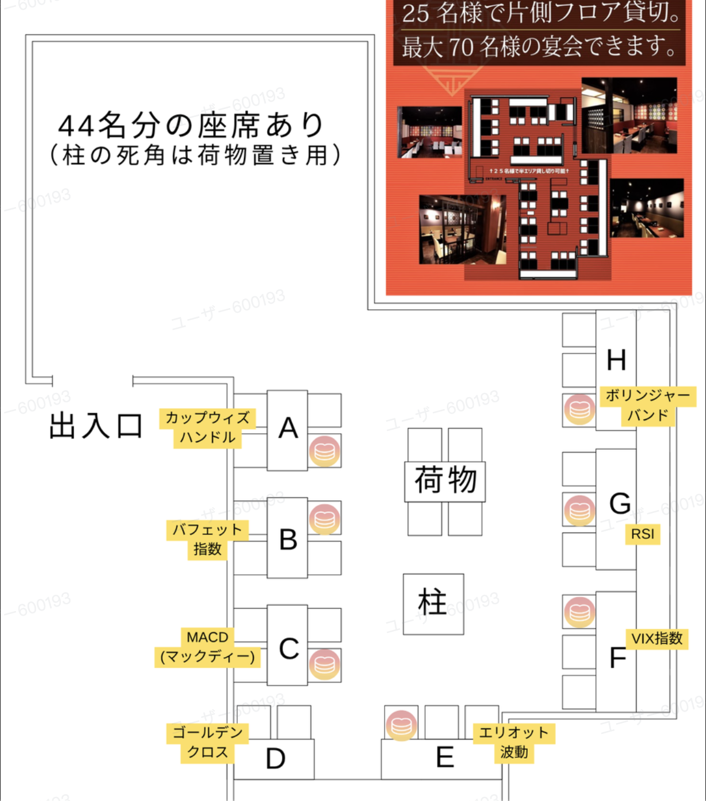

| 時間 | やること | 担当者 |
|---|---|---|
| 16:50 集合 |
受付（QR対応） | かじりー こら |
| ― | 席・荷物置場のご案内 | じん さくり |
| ― |
オフ会仕切り役
|
たまごさん |
| 17:05～ | 乾杯・りりなさん挨拶 | ― |
| 17:15～ （36分） |
歓談（A～Dの4テーブル）1卓9分 | さくり |
| 17:51～ （9分） |
席替え、りりなさん休憩 https://rjpaotemddtk.jp.larksuite.com/sync/OzKgdFKy8sx01KbrpJMjLcQ5p0e |
さくり |
| 18:00～ （36分） |
歓談（E～Hの4テーブル）1卓9分 | さくり |
| 18:36～ （14分） |
りりなさん挨拶 | ― |
| 18:50 |
2次会の案内 （まっつん、こころばさんの紹介） ※ ここでりりなさん支払い／ジンさんについてもらう |
たまごさん |
| 19:00 | マネハピ部オフ会 終了 | ― |
| 19:00 |
集合写真（店前で撮影する最後） ※ りりなさん・ジョニーさんは早めに隠す ※ 2次会に行かない人がたまらないように |
― |
